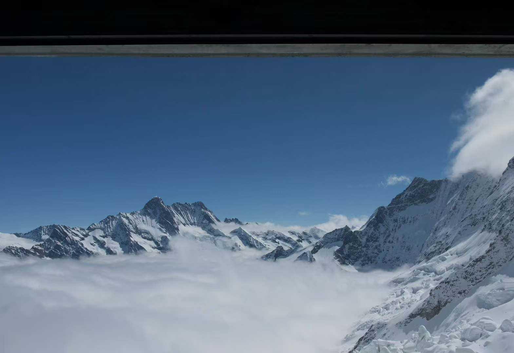
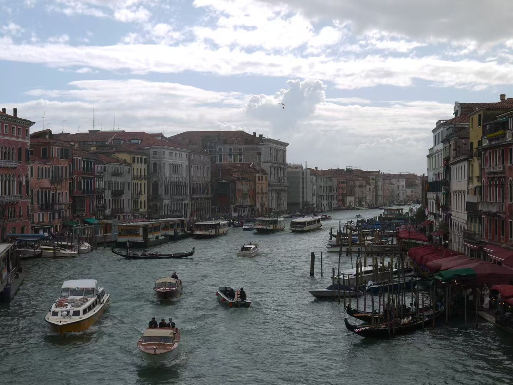
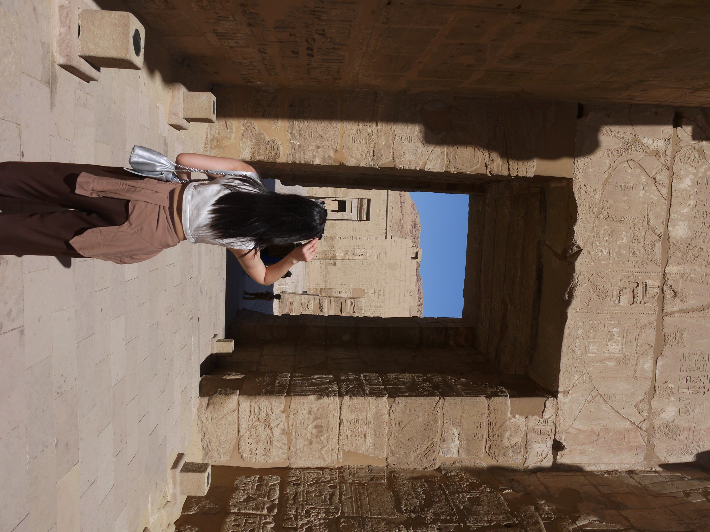
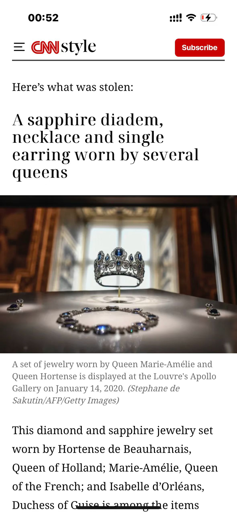

Here are some picture of places I have been. As I have mentioned I LOVEE traveling! Here are some pictures I took from Switzerland, Italy, Egypt, Spain, London, and Yosemite



I don’t know if you recall the news about the robbery at the Apollo Gallery in the Louvre. Around October last year, when I first saw the news, I was surprised but didn’t pay much attention. Later, I watched a video explaining exactly which jewels had been stolen, and I suddenly realized something shocking — one of the pieces I photographed last Christmas was among them: a brilliant blue sapphire jewelry set. I visited the Louvre on December 27, 2024. The museum is enormous, and even after spending the entire day there, we only managed to explore a small portion of it. We didn’t rush to see the Mona Lisa at first, so we spent hours wandering through different floors and galleries. By the time we reached the Apollo Gallery, there was only about an hour left before closing, and we were already exhausted. But the moment we stepped inside, the room felt completely different. The Apollo Gallery is one of the most luxurious halls in the Louvre, filled with France’s historic crown jewels. People were crowded around the display cases taking photos. I was too tired to push through the crowd, but one case had fewer people, so I quickly took a photo of the sapphire set sparkling under the lights. Only later did I learn that thieves had broken into the gallery and stole several crown jewels in a seven-minute heist. Among them was the same sapphire set I had photographed. Looking back now, it feels surreal — I unknowingly captured a photo of a piece of history that would soon disappear.

